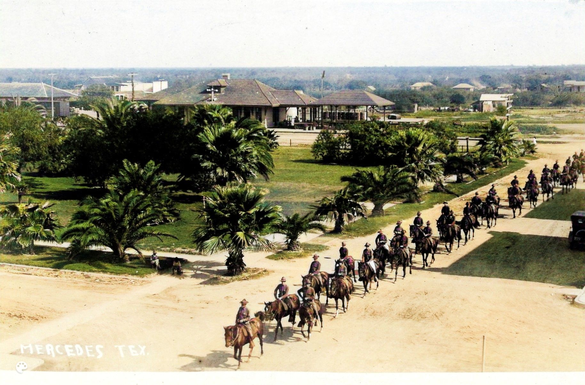
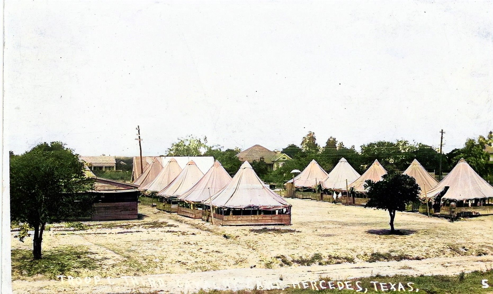
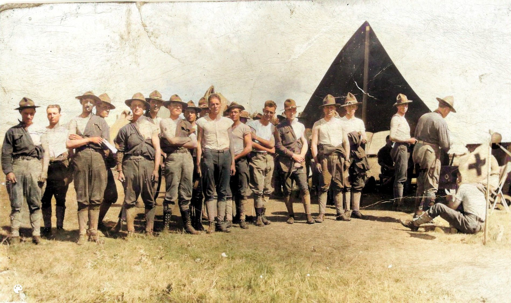

R043 Camp Mercedes Was Established by General John J. Pershing 1917
R043 Camp Mercedes Was Established by General John J. Pershing 1917
General John J. Pershing chose Mercedes as the site for a permanent training camp when the United States entered WW1 in 1916. Construction of Camp Mercedes on a 80-acre tract southeast of town was completed in early 1917. Until the WWI recruits arrived, a 16th Cavalry training cadre occupied the camp. The soldiers who later arrived for WWI training specialized in the management of horses for service in France. At its peak, Camp Mercedes hosted 16 officers, 700 enlisted men and 600 horses. After the armistice, the camp was demobilized and closed in 1922. [84]
This postcard depicts Cavalry soldiers on the parade grounds of Camp Mercedes. A standard bearer at the front of the formation carries the company's flag, which bears a large letter C.
View Enlarged View High Resolution
R005 Camp Mercedes Was Home to United States Army Cavalry Troops 1917
Sixteenth Cavalry soldiers riding South on Texas Avenue to Camp Mercedes. Mercedes City Park is on the left and the Railroad Depot is behind it. The Camp Mercedes band played concerts in the park nearly every weekend. During the WWI period, cavalry troops from Fort Brown camped in the park during joint training exercises. [82]
World War I was the last major conflict in which cavalry (horse) units were used extensively. Once considered essential offensive elements of a military force, the vulnerability of horses to modern weapons reduced their utility on the battlefield. [86]
View Enlarged View High Resolution
R006 Camp Mercedes Described as an Up To Date Military City 1917
The local newspaper described Camp Mercedes as 'an up to date military city with electric lighting, water supply and sewerage system, new barracks and officers quarters'. The camp included a laundry and a mess hall, a movie theater and a YMCA building. A bakery provided fresh bread every day. Religious services were conducted every Sunday. Some homes stall standing on Iowa Street in Mercedes were originally officer housing.[83]
The theater was open to the general public as well as soldiers. The schedule, according to the March 1918 newspaper, was: Saturday: Douglas Fairbanks in The Good Bad Man, Sunday: They're Off, Monday: Serial -- The Hidden Hand (8th episode), Grip of Evil (4th episode). Adults: 10 cents Children: 5 cents. Musical accompaniment by the 16th Cavalry Band. [88]
View Enlarged View High Resolution B014 Camp Mercedes Soldiers Guarding Irrigation Pumping Station 1917
B014 Camp Mercedes Soldiers Guarding Irrigation Pumping Station 1917
This postcard features a dozen cavalry soldiers guarding the Mercedes irrigation pump station along the Rio Grande River. Two children are seated with them. On April 30, 1916, soldiers had been fired on from across the Mexican border. Despite 150 rounds being exchanged, none of the American soldiers were injured. It was feared that the pump station would be a likely target for continuing raids from across the border. [84]
View Enlarged View High Resolution
B015 Camp Mercedes Soldiers by Medical Tent During Spanish Flu Epidemic 1917
US Army Troop C 16th Cavalrymen stand in front of the camp medical services tent, which is marked with a Red Cross flag. They are attired in standard-issue pants, undershirts, hats, and laced boots.
In an effort to curb the spread of the Spanish Flu, officers issued an order banning Camp Mercedes soldiers from attending picture shows and public gatherings during the epidemic. 'A reappearance of influenza at some of the border posts led to the order and to other precautionary measures. No cases have been reported at the camp and with the continuation of fair weather it is believed that the picture show ban will be lifted next week.' [85]
View Enlarged View High Resolution O102 El Quartel, Soldiers' Barracks at Camp Mercedes 1917
O102 El Quartel, Soldiers' Barracks at Camp Mercedes 1917
This postcard provides a view of United States Army Post Camp Mercedes. The camp was located at what is now 10th and Florida Streets in Mercedes, Texas. Camp Mercedes and Camp Llano Grande, located outside the town, were home to 15,000 soldiers during World War I. [84] In his book - Mercedes, Recurerdos de Ayer - early Mercedes resident G.G. Garcia recounts hearing about the camp during his childhood. He was told that his grandfather worked in 'el quartel' - the soldiers barracks - that were southeast of town. [92]
Image: Rio Grande Valley 20th Century Studio Photographs Collection, UTRGV Digital Library, The University of Texas – Rio Grande Valley. [50]
View Enlarged View UTRGV Studio U015 Fort Brown Company L, Second Texas Camped at Mercedes City Park 1917
U015 Fort Brown Company L, Second Texas Camped at Mercedes City Park 1917
This postcard depicts the Second Texas Infantry, a National Guard unit stationed in McAllen, Texas.They traveled to participate in military exercises with Camp Mercedes troops. While there, they camped in the city park by the train station where this photograph was taken.
The local newspaper reported on their visit: 'Company L, Second Texas Infantry was organized in 1915. First active service when called out May 1916 and sent to the Mexican border, remaining until mustered out in March 23, 1917. Called into service again April 1, 1917. The company totals officers and men, 147. The picture shows them in firing position and was posed in front of El Parado del Amor, one of the pretty parks in Mercedes.' [87] Mercedes City Park was known by locals as 'El Parado del Amor, which translates to The Stop of Love, perhaps a reference to the adjacency of the park to the train station.
View Enlarged View High Resolution{kind=link}
{kind=link}
{kind=link}